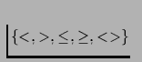

![[*]](gif/edit.gif) . VisualMOQL allows the user to compare textual
attributes. The default comparison predicate is `=' but can be changed
to
. VisualMOQL allows the user to compare textual
attributes. The default comparison predicate is `=' but can be changed
to

, \leq, \geq, <>\}$">. Since the variables used to refer to objects in the MOQL translation are shown on the object icons, they can be used to express join operators. For example, ``find images with 2 persons of the same name'' can be expressed by inserting two salient objects of type person in the working canvas. Assume VisualMOQL refers to them as P01 and P02 respectively. Then the user can edit one of the salient objects (let us say P01) and type ``P02.name'' as the value for the attribute name. The query can involve image global properties like name of the photographer or the time the image was taken. A dialog box similar to Figure, without the shape similarity
part, can be accessed by clicking on the button ``Image Property'' to
let the user enter such information.
Topological relationships will be added automatically for any intersected objects. Directional relationships have to be defined explicitly through a dialog box in which the user specifies which axes matter.
We will use the term sub-query to refer to query blocks obtained from the working canvas. By clicking on the ``Validate'' button, the user ends the sub-query specification. The sub-query is then moved into the query canvas where it can be combined with other sub-queries to form the final query.